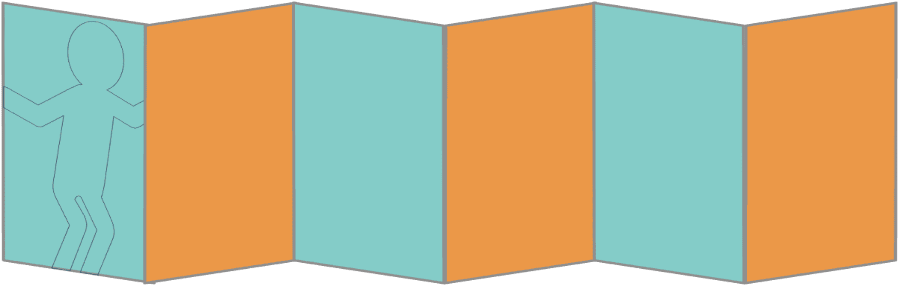

01 / PURPOSE
ゲームの目的
限られた材料と時間の中で、チームで試行錯誤しながら、できるだけ高い自立式タワーをつくります。
協働役割を決め、アイデアを共有しながら一つの成果をつくる。
試行錯誤小さく試し、失敗から学び、制限時間内に改善する。
振り返り結果だけでなく、チームの進め方と意思決定から学ぶ。
02 / RULES & FLOW
ルール説明と進行方法
01導入・チーム分け目的を伝え、登録したチームで活動を始めます。
02役割分担・備品確認自己紹介後、設計・組み立て・サポートの役割を決めます。
03ルール・作戦会議4つのルールを確認し、1枚の紙で5分間作戦を練ります。
04制作・作業終了15分間制作し、タイムアップ後はすぐに手を離します。
05計測・振り返り・発表運営が高さを記録し、チームで振り返った後に発表します。
03 / STAFF
運営メンバー
01進行役画面を操作しながら、ルール説明とゲーム全体の進行を担当します。
02メジャー担当各チームのペーパータワーの高さを計ります。
03撮影係記録を残しておくことで、ゲーム後の振り返りに使います。
04 / VENUE
会場の準備
01各机のチーム名表示チーム名が分かるよう各机に表示してください。チームごとに独立した机をできるだけ用意してください。複数チームで同じ机をシェアすると、揺らしたなどの問題が起こります。
02メジャー
03脚立
04撮影用カメラ
05大型モニタ または プロジェクター参加者全員がこのアプリを見られる位置に設置します。
05 / TEAM KITS
各チームへの配布物準備
チームごとに下記を用意してください。計測用メジャーは運営側で用意します。

- 01カラーでA4用紙に印刷する。
- 02無地の部分を切り取る。
- 03蛇腹状に折る。
- 04ヒューマンの絵に沿って切り取る。
- 05左端と右端のヒューマンの手をテープで留め、輪の状態にする。
06 / A REQUEST FROM US
運営からのお願い
¥任意のご支援についてこのアプリが役に立ちましたら、少額でも運営・改善費をご支援いただけるとうれしいです。ご支援は完全に任意で、利用条件ではありません。
SONA STUDIOへメールでご連絡ください。
◎活用事例をお寄せくださいご活用いただいた企業名・団体名と、実施時の写真（公開可能なもの）をぜひお送りください。
活用事例をメールで送る
04 / TEAMS & MEMBERS
チームと参加者の登録
1チーム3～5名を基本としてください。
チーム名参加者（1行に1名）
0名
チーム・参加者ファイル設定はブラウザに自動保存されます。CSVにはゲーム設定、チーム名、各チームの参加者が保存されます。